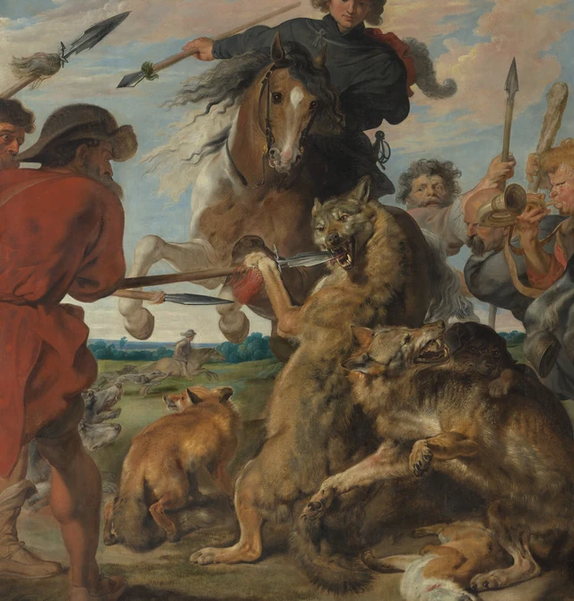

← 艺术作品细读 这篇谈什么 一 两匹马把空间挤向中间 二 矛刃进入狼口的那一段距离 三 最大的亮面怎样把目光送回来 四 远方很开阔 近处却走不出去 五 今天的边界也有历史 可选阅读 用SAE检验方向与显现 图像与资料说明 先把整幅画看作一片横向展开的场地。天空很宽，地平线很低，照理说足够让马群疾驰过去。然而，左边的马迎面抬起前腿，右边的大灰马把后躯转向我们，头和前腿又朝向左边。它们之间，两只狼、一群犬、几根长杆和几张人脸挤作一团。画幅给了运动很大的声势，却几乎没有给中心的动物留下畅通的去路。
图1 彼得·保罗·鲁本斯及工作室，《猎狼与猎狐》，约1616年，布面油画，245.4×376.2厘米。纽约大都会艺术博物馆，John Stewart Kennedy Fund，1910年，藏品号10.73。图像：The Metropolitan Museum of Art，公共领域，Open Access／CC0。馆藏记录 点击查看高清图 不妨从画里的包围与阻滞看起：力量从不同方向进入，在很短的距离里遇到抵抗，动势因此变得强烈。追猎提供故事，碰撞则组织了我们眼前的画面。
约1616年，鲁本斯开始制作这一时期的大型狩猎画。大都会的目录将本作列在开端，并指出这类巨幅油画为贵族室内提供了比狩猎挂毯省时、省钱的装饰选择。狩猎特权与大土地所有者的地位相连：画里的豪华坐骑、服饰和大规模围猎，也在向预期观众呈现他们熟悉而有资格享有的生活。理解这一点，再看画幅的尺度就很具体了。近三米八的宽度、高过成人的画面，把一场身份鲜明的活动铺成了室内一整片可见的力量。馆方目录
一 两匹马把空间挤向中间 左马的鼻梁上有一道浅色，脸和胸部大体朝向我们。左右两条前腿弯起，浅色腿部在较暗的身体前十分清楚。这个姿势让马的体积向画外逼近：我们看到迎面的宽度，而不是一匹马从眼前横向通过时的长长侧影。骑者举着长杆，手臂向左展开，黑衣和飘动的鬃毛把上半部拉宽；马的前腿却把这股张势收在胸前。
右侧灰马几乎相反。巨大而圆的后躯靠近右下方，躯干横伸，脖子在上方弯向左，鼻口低垂。两条前腿收起，蹄子抵近中央人物。我们可以顺着这匹马的身体，从宽阔的灰白色块走到弯曲的颈、低下的头，最后被带回狼和猎人的上方。它如此醒目，却没有把注意力单独带走。
两匹马也不构成一对整齐的镜像。左边窄而正，右边宽而侧；左马的前腿露在狼身后，右马的前腿横压在人与犬上方。这样的错位很重要。如果它们并排朝一个方向奔跑，眼睛容易跟着队伍划过画面。现在，各自的朝向在中心相遇，我们必须换方向看。画里的速度于是成为一个难以顺畅通过的地方。

图2 原图局部裁切。比较马的迎面体积、长杆的横向伸入与狼的立起。狼爪旁的红色是杆上的流苏。图像：The Metropolitan Museum of Art，CC0。点击查看高清图 两边的马都扬起前身，却给出不同的重量感。左边的浅色腿像被突遇的障碍挡住，右边的大身躯则把中央空间压得更低、更窄。两匹马的前蹄都悬在别的身体近旁，共同增强了接触即将发生、或已经发生的迫近感。
二 矛刃进入狼口的那一段距离 中央偏左的狼站起上身，胸腹竖长，前爪向左伸出。一根长杆从左侧红衣猎人那里横向进入，金属刃抵入张开的嘴；狼的嘴、爪、杆与红色流苏相距极近。这一小段关系使宏大的围猎突然有了可量的距离。危险不再只靠“凶猛动物”这个名称成立：硬物和柔软身体已经碰在一起。
矛刃的平直亮边切过深暗口腔，牙齿在上下颌之间露出。杆身延长了人的动作，把画外似乎还在继续的力送到狼的头部；狼向上的躯干又把这股横向推力截住。鼻、眉、露齿的口和抬起的爪，围绕同一处抵抗聚拢，形体的扭转由此有了理由。
这一带的线条各自有不同的工作。低处的杆接近横向；骑者手里的长杆斜越左上；后方另有近乎竖直的矛，还有被举起的木棒。它们像几种不同长度、不同方向的动作，在软曲的鬃毛、衣袖和兽身之间留下可以追踪的路线。直线让拥挤仍然可读，也使那些弯折的身体更显得受力。
往下看，另一只狼的头抬向右上，嘴张开，身体却斜着落向右下。深色犬贴在它身后，头和爪从狼的轮廓旁露出来。更右边，浅色犬低着头伸进这团躯体，灰暗的犬头又在其上方出现。这里很难把每只动物完整地分离出来；我们仍能跟随头、背、爪的交替，看出纠缠怎样从一个接触点扩展成一整团。
这种遮挡并没有让全部形体变成同一种糊状物。朝上的狼口有明亮的牙齿和鼻梁，深色犬的脸则陷在较暗的皮毛里；一只前爪横过另一段毛皮，脚趾与爪端把它标出来。眼睛时而认出一个身体，时而被另一个身体截断。这种一段段才能接起来的观看，正好对应画中行动不断遇到阻力的状态。
三 最大的亮面怎样把目光送回来 灰马是全画最大的一片亮色，肩颈接近乳白，后躯则逐渐变成带深色斑纹的灰。颈部的长弧、腹部的圆面与后腿的细长轮廓，使一大团浅色内部仍有清楚的转折。它的亮并不平铺在画布上，而是沿着肉身起伏，显出一个占据空间的体积。
黑色缰绳横过浅色脖颈，牵到绿衣骑者手边。骑者的上身朝左回转，脸向下看；一条腿顺着马腹垂落，把绿色上衣和浅棕色靴子接在不同高度。马的朝向、绳的斜线和人的视线互相接应。即使目光先被灰马吸引，也有几条现成的路把我们送回中央。
图3 原图局部裁切。沿马身的亮面看向马头，再沿缰绳看向骑者；下方的前蹄仍压在中央搏斗上方。图像：The Metropolitan Museum of Art，CC0。点击查看高清图 绿衣袖上有一道亮带，转入褶皱后很快变深；光滑的起伏给它一种缎面的质感。附近马鬃的浅线则分叉、翻卷，外缘向天空散开。狼背上的毛密而短，轮廓带着细碎的参差。把这些相邻表面放在一起看，光分别变成了织物的折面、马皮的弧面和毛发的尖端。画面热闹，材质的差别却被保留下来。
人物的脸也没有齐刷刷地重复一个表情。中央吹号者鼓着脸颊，号口朝左前方打开；其后几张脸挤在马颈、狼背和器械之间。头部面积不大，额头、鼻梁和脸颊上的亮色却一处接一处，让人的在场穿过了大片兽身。号角使我们容易想象声音，画上实际可见的则是嘴、手、号管的连接，以及一个圆形开口嵌入密集轮廓中的方式。
右上方的两位骑者位置更高，衣着与姿态也和前景步行猎人拉开距离。绿衣人的转头把高处接回冲突，后方女子较直立的身形又暂时放缓了动作。绘画让观看、指挥、接近和搏斗同时出现，却没有把所有人画成同样激烈的身体。高处骑者的视线因而成为观看搏斗的一层中介：我们先见到他们的转头，再顺着他们看向较低处的动物。
四 远方很开阔 近处却走不出去 两组大身体之间，低低的地平线断续露出。左下偏中的缝隙里还能看到远处一位很小的骑者、犬和绿色田野。远景使用较冷、较平缓的蓝绿，前景则挤满棕黄、红、黑和强烈的灰白。大小与色彩共同把距离拉开：那边可以横向延伸，这边的身体却近得几乎叠在一起。
这段远景值得停留。它证明画家能够给出开阔的地带，也使前景的堵塞更明确。天空占着很大的面积，云带在头顶舒展；开放并没有消失，只是没有转变为狼与犬脚下可用的通道。我们在画外可以轻松看过天空，在画里却找不到一条同样轻松穿过中央的路线。
底边的狐狸进一步改变了节奏。左下的狐狸立着，身子转开，头却回望；中央下方有一只倒伏的狐狸，白色腹部和头部接近地面，嘴旁可见红色痕迹。右下另一只翻身的狐狸仰面朝上，蜷曲的腿贴近马蹄。站立、倒伏、翻转这些姿势，让画底出现了不同于上方扬起动作的节奏。狐身的水平延伸与蜷曲也把目光留在地面，让我们看见高处的蹄子下面还挤着多少身体。
越是看见这些低处，越难把全画当作毫无代价的欢快运动。对历史上的贵族观众，画面可以与身份、勇敢、狩猎经验相连；今天的观众也可能首先感到猎物所受的威胁。画面能强烈地组织观看，并不要求我们赞同猎杀。两种态度都须面对相同的形体：高处的人仍能观看，低处的动物已经贴近土地和蹄子。
五 今天的边界也有历史 现存画面宽约三米八，馆方当前解释认为它最初更大，约为11或12英尺高、18英尺宽，主要从上方和左边裁缩，两只狼原来更接近构图中央。目录还提出，可能因为若干买家觉得尺幅过大，画布在鲁本斯工作室中就已缩小；具体情形并不确定。馆方目录
这个问题曾有不同结论。馆页所列1984年研究认为技术检查不支持显著裁减；2011年的目录正文以及现行馆方说明采用原幅较大、后来裁缩的解释。我们因此可以讨论现存边缘怎样加强拥挤，却不宜把裁去多少、何时裁切、原图每处长什么样说成已经精确复原的事实。当前左边被截入的人物与上方贴近边缘的头饰，首先是今天这件物体给我们的观看条件。
完整归属“鲁本斯及工作室”也提醒我们：这幅巨画是工作室生产的一部分。馆方介绍，大画通常有助手参与铺陈设计、背景及次要细节，鲁本斯再加强轮廓、光影和表面效果；书信中，他经托比·马修向达德利·卡尔顿申明狼与狐狸由自己执行。这是可以讨论的文献证言，却不能让我们仅凭屏幕上的一缕毛或一道高光，给全部笔触逐一签名。
现存画面的精彩仍然可由眼睛核对。巨大的浅色马身、横进的金属刃、竖起的狼、纠缠而不完全可分的下层动物，把多种方向保存在同一个场地里。我们感觉到速度，同时又不断遇上速度不能顺利通过的地方。本文所说的包围与阻滞，正是这幅狩猎画把广阔场面变成迫近遭遇的方式。
可选阅读 用SAE检验方向与显现 以下借秦汉SAE（Self-as-an-End）美学中的感知方向提出一个当代观看练习，不据此推定画家的意图。SAE美学总纲 ；感知之美
先暂时放下“围猎”“勇敢”“残酷”这些名称和判断，只用手在空中指出几种可见方向：左马的胸朝哪里，右马的头朝哪里，横杆从哪里进入，立起的狼又怎样把它挡住。再追踪自己的目光：它从最大的一片亮色，经过哪些边缘、绳线或脸部，回到中央？身体仿佛要去的方向，与眼睛实际被引导的路径，并不是同一件事。
这个练习把“很有动感”拆成可以共同检查的关系。若你看见的主要是流畅旋转，而非阻滞，就找一条能连续走完的路线，并看它在狼口、马蹄或重叠躯体处是否仍然顺畅。反过来，本文的判断也要容纳天空的舒展和马鬃的飘动。可辨的抵抗与可辨的流动共同构成画面，主张的任务是解释它们如何相接。
再把名称和历史带回来：贵族的围猎由骑者、步行猎人和猎物各自占据的位置呈现，身体受力的差别也给伦理判断留下了具体根据。这个练习应使下一眼更准确：读者可以在同一条视线路径上指出，流动在哪里继续，在哪里转弯，又在哪里被另一具身体挡住。
图像与资料说明 视觉描述依据大都会艺术博物馆提供的4000×2672像素图像。全图保持官方JPEG原样，包括黑边与画面边缘；两张局部由原图直接裁切，以PNG保存，保留裁切范围内的像素与ICC色彩配置，未缩放、调色、补绘或使用生成图像。数字复制品的色彩与观看尺度仍受屏幕条件影响。
图像采用馆方Open Access开放政策 下的CC0许可。本文为独立撰写的细读，历史信息据馆方目录与所列文献，应用SAE的判断属于本文，不代表馆方背书。详见同包参考资料 与图像登记 。
参考资料 参考资料与证据说明 核验日期：2026-10-15。
作品级资料 1. The Metropolitan Museum of Art，Peter Paul Rubens and Workshop，Wolf and Fox Hunt，ca. 1616，藏品号10.73。
本包采用馆方当前完整归属、题名、年代、尺寸及收藏信息。作品为布面油画，245.4×376.2厘米；John Stewart Kennedy Fund，1910年。对象页的Catalogue Entry全文标为2011年，依据Liedtke 1984及Bauman and Liedtke 1992。本文据该目录说明大型狩猎画与挂毯、贵族室内和狩猎特权的关系，以及工作室制作和书信中的动物执行归属。没有把骑者确定认作鲁本斯及其家人。
2. The Metropolitan Museum of Art Collection API，对象437536。
用于交叉核对对象编号、媒材、日期、尺寸、原图地址及isPublicDomain=true。API简短字段不能替代对象页完整归属与学术目录。
3. 馆方官方图像。
4000×2672像素。本包全图为该JPEG原样复制；细读依据全图及局部实际观察。正文对方向、遮挡、亮面、毛皮、织物及动物姿态的分析是本包作者的视觉判断，不冒称馆方结论。
裁缩史应怎样理解 同一对象页保留了研究意见的变化：
- 1984年：Walter A. Liedtke，Flemish Paintings in The Metropolitan Museum of Art，第1卷198–209页；第2卷彩图XV、图版77–78。馆方书目摘要记载，该研究认为技术检查不支持显著裁减。
本文使用当前馆方解释，同时交代1984年不同结论。原始尺寸是估计；不据此声称精确复原缺失区域或确定裁切时间。以上旧研究的陈述根据馆方对象页完整目录和书目摘要，未冒称另行通读各原版专著。
工作室与书信 同一馆方目录解释巨幅画由助手参与铺陈设计、背景和次要细节，随后由鲁本斯加强轮廓、光影及表面质感。目录还记述，鲁本斯通过Toby Matthew向Dudley Carleton申明狼和狐狸由他执行。
这是文献证言与馆方对制作惯例的说明，不是凭数字图像划分每段笔触的依据。本包不增列Frans Snyders或Jan Wildens为本作确定合作者，也不把不同材质的成画效果当作某一只手的证据。
SAE来源 4. Han Qin／秦汉，SAE Judgment and Aesthetics — In Tribute to Kant，第二版。
5. Han Qin／秦汉，The Beauty of Perception／感知之美，SAE美学射线8。
文末练习只借用感知方向，区分眼前可指认的形状、色彩和方向，与依赖名称、知识及价值判断的部分。它不声称可以抹掉全部背景知识，也不把动感、动物题材或几何线条直接判为其他射线的成立。该应用是当代阅读工具，不代表鲁本斯意图、馆方认可或艺术史共识。原站署明CC BY 4.0；本包采用转述，没有大段转载理论原文。
图像开放许可 6. The Metropolitan Museum of Art，Open Access。
7. Creative Commons，CC0 1.0 Universal。
本作图像标记为公共领域，适用Met Open Access／CC0政策。图像许可与馆方研究文字的版权须分开理解。图片文件、裁切坐标和完整来源见IMAGE_CREDITS.md与image_manifest.json。
图像来源与使用说明 本站图片说明：全图重新取自馆方，文件校验值与底稿登记一致；局部按登记坐标重新裁切，保留原像素与色彩配置。PNG文件编码可能与原包不同，以下登记保留原包信息；网页另提供轻量预览图，点击可看全尺寸图片。
图像来源与许可 作品 Peter Paul Rubens and Workshop／彼得·保罗·鲁本斯及工作室
Wolf and Fox Hunt／《猎狼与猎狐》，ca. 1616／约1616年。
布面油画，245.4×376.2厘米。The Metropolitan Museum of Art，New York；John Stewart Kennedy Fund，1910；藏品号10.73。
- 对象页：https://www.metmuseum.org/art/collection/search/437536
本包图片 图1 官方全图 文件：images/rubens_wolf_fox_hunt_full.jpg
4000×2672像素，3,602,471字节。JPEG按下载文件原样保存，没有重编码；黑色外缘、画边及左下数字均保留。
SHA-256：de30e3169b7dfaa7ce7c3be6d7bc335ea538dc9ea30bc63280e363c117895256
图2 左侧相遇 文件：images/detail_left_encounter.png
裁切坐标：(120, 430, 2070, 2470)，输出1950×2040像素。坐标以官方4000×2672图像左上角为原点，按left, top, right, bottom记录，右与下边界不包含在内。
保留迎面马体、从左伸入的长杆、狼口与刃的接触、狼爪旁红色流苏，以及下方相缠动物。局部没有保留左侧骑者完整头顶，不用于单独判断其肖像或完整姿态。
图3 右侧灰马 文件：images/detail_right_horse.png
裁切坐标：(1850, 100, 3900, 2490)，输出2050×2390像素。保留灰马头、弯颈、缰绳、抬起前腿、骑者转身及下方犬与狐狸，供读者核对亮面内部的方向关系。
处理方法 两张局部从官方JPEG解码后的RGB像素直接裁切，以无损PNG保存，没有缩放、插值、调色、锐化、修复、补绘或生成内容。原图的3136字节ICC配置逐字节嵌入两张PNG。局部输出像素与原图相应矩形的解码像素逐一比对一致；这不意味着JPEG本身原来没有有损压缩。
所有图均以The Metropolitan Museum of Art为图像来源，按CC0使用。各语正文含对应语言的替代文字与图注，另集中列于image_texts.json。完整尺寸、文件摘要、像素和ICC校验记录见image_manifest.json。
数字图像可支持本包的视觉描述，不能代替对原作材料、笔触作者、制作顺序或准确原始画幅的技术鉴定。
← 艺术作品细读 回到页首